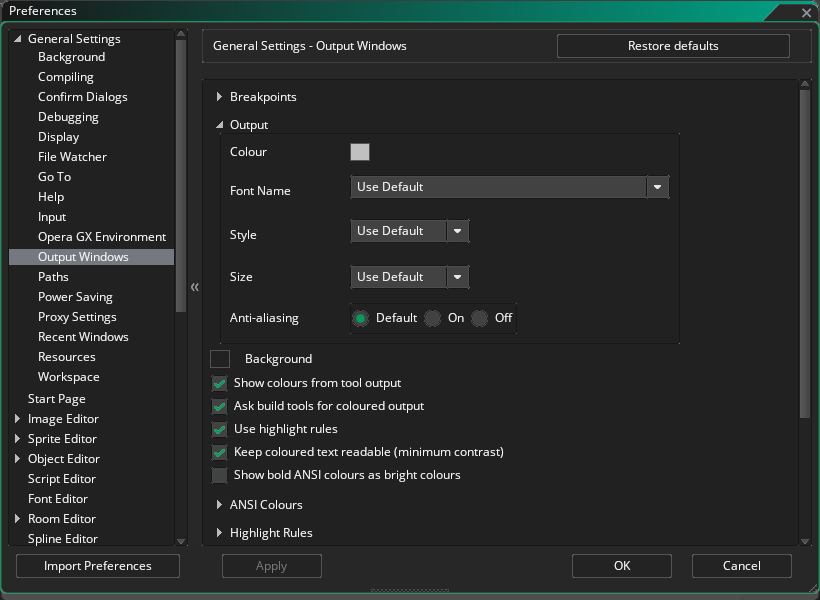
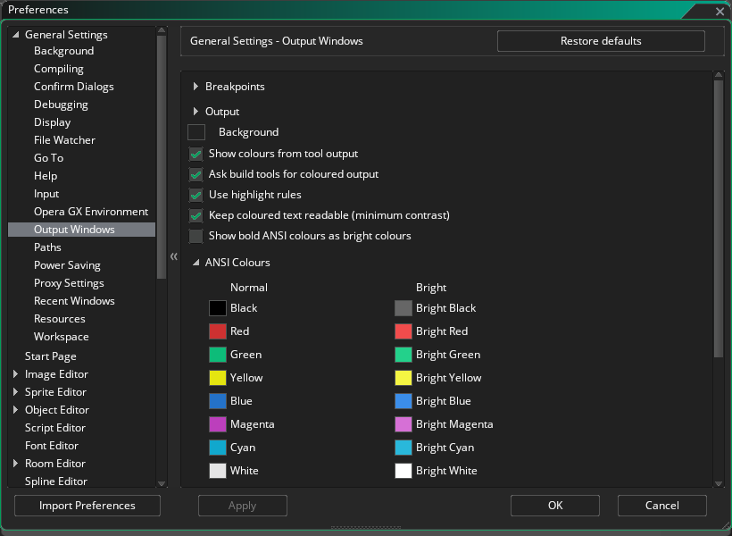
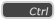
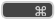
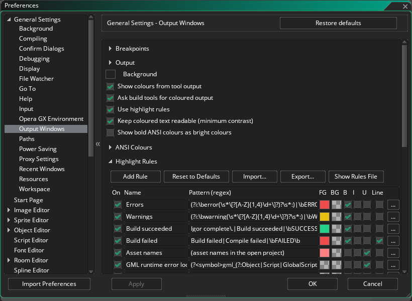
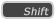
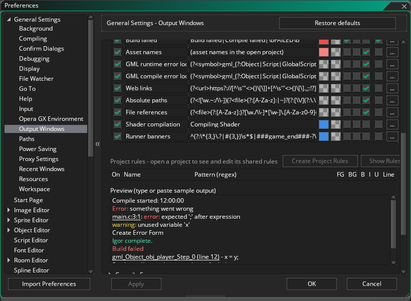

Output Windows Preferences

The Output Window preferences control how text is shown in the Output, Source Control, Project Tool and Project Health windows: the font and background, the colours that build tools write into their output, and the highlight rules that colour text and turn it into links. The Terminal window uses the same font, background and colours, and the Search Results window uses the highlight rules.
The defaults for the background, the text colour and the ANSI colours come from the current skin, so they change when you change the skin (including a skin made with the Skin Generator). Any of them that you change yourself is kept when the skin changes.
Font Settings
Each output window has its own group of font settings, named after the window: Output, Breakpoints, Compile Errors, Syntax Errors, Search Results, Project Health, Source Control and Project Tool. The Terminal window uses the Output group. Each group has the same options:
- Colour: The default colour for the text being written to the window. For the Output group it comes from the current skin until you change it.
- Font Name: The name of the font to use (available fonts will depend on those installed on your system), or Use Default for the code editor's font. The Terminal window needs a monospaced font, so if the font you choose isn't one, the Terminal uses the IDE's built-in monospaced font instead.
- Style: The font style to use, like bold or italics (note that not all windows will permit the same styles and it will also depend on the font used).
- Size: The size to set the font to for the window.
- Anti-Aliasing: Here you can set the anti-aliasing mode for the output windows font rendering. You can choose to let the IDE decide by selecting Use Default, or you can force it On or Off by selecting either of those options.
Background
Background: The background colour of the output windows and the Terminal window. By default it is the code editor background of the current skin.
Colour From Tool Output
Build tools and other programs can colour and style their output with ANSI escape codes. These options control how that is shown:
- Show colours from tool output: Shows the colours and text styles (bold, italic, underline and so on) that tools write. When this is off the escape codes are still removed, so the text is plain. Default is on.
- Ask build tools for coloured output: Asks the build tools that GameMaker runs to colour their output, which many tools only do when they write to a terminal. Default is on.
- Keep coloured text readable (minimum contrast): Adjusts the colour of any text that is hard to read against the colour behind it, for example dark blue text on a dark background. This applies to tool colours and highlight rule colours alike. Default is on.
- Show bold ANSI colours as bright colours: Shows bold text in one of the 8 basic ANSI colours in its bright variant (bold red in bright red, and so on), as many terminals do. It only changes text that a tool coloured with an ANSI colour, not the colours of highlight rules. Default is off.
- ANSI Colours: The 16 standard ANSI colours (palette entries 0 to 15): Black, Red, Green, Yellow, Blue, Magenta, Cyan and White, and the bright version of each. The defaults come from the current skin.

Changing any of these options and pressing Apply changes the text already in the windows as well as new output.
Highlight Rules
Highlight rules colour text that matches a pattern, can mark the line as an error or a warning, and can turn the text into a link that you open with

/ 
+ . Untick Use highlight rules to turn them all off.

Each rule is a row with these columns:
- On: Whether the rule is used.
- Name: A name for the rule, so you can tell the rules apart.
- Pattern (regex): A .NET regular expression that is matched against each line of output.
- FG and BG: The text and background colours for matching text. Leave either unset to keep the colour the text already has.
- B, I and U: Make matching text bold, italic or underlined.
- Line: Colour the whole line, not just the matching text.
The menu button at the end of a row has these options for the rule:
- Duplicate, Move Up, Move Down and Remove.
- Move to Project Rules / Move to Your Rules: Move the rule between your own rules and the open project's shared rules (see below).
- Ignore Case: Match the pattern whatever the case of the text.
- Stop Lower-Priority Rules on Match: When this rule matches a line, rules with a lower priority aren't tried on it.
- Use Code Editor Asset Colour: Use the colour that the code editor shows asset names in, rather than the rule's own FG colour. The colour then follows the code editor, so it changes with the skin and with your code editor colour preferences. The default Asset names rule uses this.
- Doesn't Mark the Line / Marks the Line as an Error / Marks the Line as a Warning: Lines marked as errors and warnings are counted in the bar at the top of the window, and F8 and

+ F8 jump to the next and previous one.
- Not a Link / Link: Open Location / Link: Open Web Address: What clicking matching text does. An Open Location rule opens the file or asset named by the pattern's named groups: file or symbol (a GML symbol such as gml_Object_obj_player_Step_0), with line and column (or line0 for a line counted from 0). An Open Web Address rule opens the url group, or the whole match, in your browser.
- Apply to Output, Apply to Source Control, Apply to Project Tool, Apply to Project Health and Apply to Search Results: Which windows the rule is used in.
Below the rules:
- Add Rule: Adds a new rule.
- Reset to Defaults: Replaces your rules with the default rules.
- Import... and Export...: Load rules from, or save them to, a rules file, to share them with other people.
- Show Rules File: Shows the file your rules are stored in, output_highlight_rules.json. It is in the same folder as your other preferences (see Back Up Preferences for where that is), so back it up with them. You can also edit it by hand.
- Preview (type or paste sample output): Shows how the rules colour the text you type or paste, as you change them. It starts with some sample output.

A project can also have its own rules, stored in options/output_highlight_rules.json in the project folder, so that everyone working on the project gets them. Use Create Project Rules to start them. A project rule with the same name as one of yours replaces it while the project is open, so a project can also turn one of your rules off.
You can also add a rule from the output itself: select some text, right-click it and choose Highlight This (or Highlight in Project) and a colour. Remove Highlight takes the rule away again, and Edit Highlight Rules... opens these preferences.
The Default Rules
| Rule |
What it highlights |
| Errors |
Errors such as error:, Error :, error CS1002: or a capitalised ERROR, in bold red, and marks the line as an error. The word "error" in ordinary text (such as "Create Error Form" or "0 errors") isn't highlighted. |
| Warnings |
Warnings in the same forms, in bold yellow, and marks the line as a warning. |
| Build succeeded |
Igor complete., Build succeeded and SUCCESS, in bold green. |
| Build failed |
The whole line for Build failed, Compile failed and FAILED, in bold red. It isn't counted as another error. |
| Asset names |
The names of assets in the open project, underlined in the code editor's asset colour. Clicking one opens the asset, as a double-click in the Asset Browser does. |
| GML runtime error locations |
Locations in runtime errors and stack traces, such as gml_Object_obj_player_Step_0 (line 12). Clicking one opens the code at that line. |
| GML compile error locations |
Locations in compile errors, such as gml_Script_scr_move(10). Clicking one opens the code at that line. |
| Web links |
Web addresses. Clicking one opens it in your browser. |
| Absolute paths |
Full file and folder paths, with an optional line and column. Clicking a project GML file opens it as its asset. A text or image file opens in its default application, and anything else (such as a program or script) is only shown in its folder, so clicking output never runs anything. |
| File references |
Files with a line number, such as main.c:3:1 or Foo.cs(1,2). Clicking one opens a project GML file at that line, and other files as Absolute paths does. |
| Shader compilation |
Compiling Shader lines in the Output window, in blue. |
| Runner banners |
The runner's **** lines around "Entering main loop.", the #### lines around a runtime error, and the ###game_end### line, in blue. |
When a new version of GameMaker changes the default rules, any default rule you haven't changed is updated to the new version, and new default rules are added. Rules you have changed or added yourself are always kept as they are.